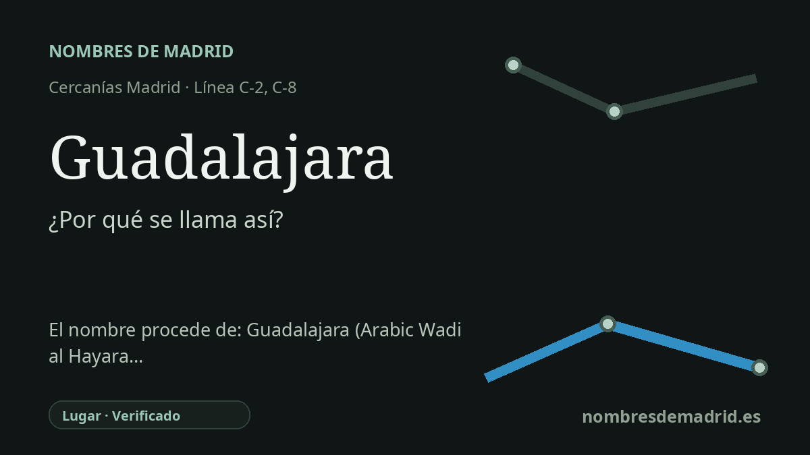

Publicado el · Investigación de Nombres de Madrid · Cómo verificamos cada origen · 9 fuentes consultadas
Respuesta rápida
La estación de Guadalajara se llama así por la ciudad a la que sirve. El nombre de la ciudad procede del árabe Wad al-Hayara o Wadi al-Hijara, normalmente interpretado como un nombre relacionado con las piedras y vinculado al antiguo Arriaca.
La historia del nombre
La estación de Guadalajara recibe su nombre de la forma más directa: por Guadalajara, la ciudad y capital provincial a la que sirve. En la red de Cercanías Madrid, el Consorcio Regional de Transportes de Madrid la recoge como estación de Cercanías con correspondencias C-2 y C-8, y Adif identifica la estación ferroviaria simplemente como Guadalajara, en la calle Francisco Aritio, s/n.
Detrás de esa denominación ferroviaria moderna hay un topónimo mucho más antiguo. La historia turística del Ayuntamiento de Guadalajara indica que el núcleo temprano fue conocido en época islámica con dos nombres: Madinat al-Faray y Wad al-Hayara. La misma fuente municipal explica Wad al-Hayara como una traducción árabe del nombre prerromano Arriaca, relacionado tradicionalmente con piedras, terreno pedregoso o un cauce pedregoso.
La explicación divulgativa habitual, por tanto, es en lo esencial correcta, pero debe formularse con cuidado. Guadalajara suele glosarse como 'río de piedras' o 'valle de piedras', a partir del árabe wadi y una palabra para las piedras. Sin embargo, la fuente local pública más sólida no lo presenta solo como una descripción nueva del Henares pedregoso, sino como traducción o adaptación árabe de un topónimo anterior, Arriaca.
El gran cambio medieval de la ciudad llegó en 1085, cuando Guadalajara se incorporó al reino de Castilla dentro de la expansión de Alfonso VI. La tradición posterior convirtió ese episodio en una hazaña militar de Alvar Fáñez de Minaya, figura que aún aparece reflejada en la imagen cívica de la ciudad. Más tarde, la familia Mendoza dejó en Guadalajara uno de sus monumentos más visibles, el Palacio del Infantado, iniciado hacia 1480 y hoy sede del Museo de Guadalajara tras su destrucción y restauración en el siglo XX.
Para el nombre de la estación no hay una explicación rival seria: es el nombre de la ciudad. La incertidumbre está en la etimología profunda del nombre urbano, especialmente en hasta qué punto Arriaca puede vincularse con seguridad a la ciudad actual y si la mejor traducción debe ser 'río', 'valle' o, de forma más general, un cauce o wadi pedregoso. Una ficha prudente debería decir que Guadalajara se explica tradicionalmente desde el árabe Wad al-Hayara / Wadi al-Hijara, vinculado al antiguo Arriaca, sin presentar todos los detalles de la etimología popular como hechos cerrados.